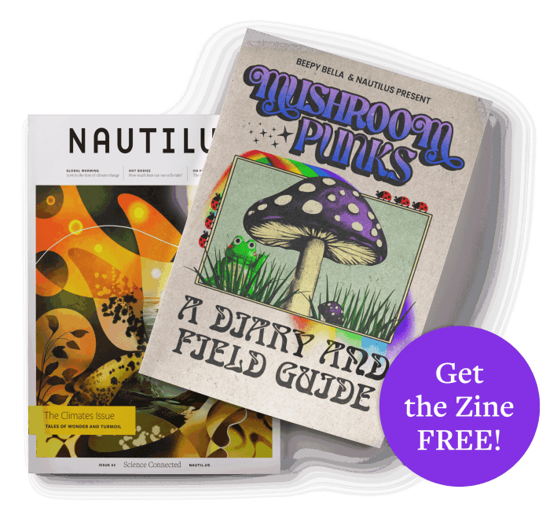

Subscribe to Nautilus in print and receive a FREE 'Mushroom Punks' Zine
Become a print subscriber today, and you'll receive the Nautilus x Beepy Bella 'Mushroom Punks' Zine, on us! Go beyond the headlines with in-depth analysis, stunning visuals, and timeless stories that connect the dots of our universe.
Print + Digital Membership
$89/year
All digital membership benefits, plus:
- The beautifully crated print quarterly
- Complimentary access to special editions and print supplements
- Free shipping in the United States

New print subscribers will receive a FREE 'copy of Issue 10'Mushroom Punks' Zine, shipped separately.
About the 'Mushroom Punks' Zine
A collaboration between Nautilusand designer Isabella Lalonde, Mushroom Punks blends vintage field guide inspiration with art, photography, and a catalog of mushrooms discovered on a foraging expedition in the Angeles National Forest. An essential item for any mushroom lover.
Or, choose a digital membership to start your Nautilus journey online.
Digital memberships do not include a copy of the 'Mushroom Punks' Zine.
Annual Digital Membership
$59/year
- Unlimited Nautilus articles online each month
- Weekly newsletters in your inbox
- Ad-free reading experience
- Bonus access to Nautilus channels
- Read on any device
Monthly Digital Membership
$9.99/month
- Unlimited Nautilus articles online each month
- Weekly newsletters in your inbox
- Ad-free reading experience
- Bonus access to Nautilus channels
- Read on any device
All Nautilus memberships renew automatically. You can manage your auto-renew settings in your account at any time.
Our Readers Say It Best
Join more than 500,000 readers in experiencing why Nautilus is a different kind of science magazine.
The Nautilus Vibe
Nautilus is the foremost literary science publication to find rigorous science writing told with impeccable style. Our stories will light up your emotions, and introduce you to a delightfully weird and surprising mix of big ideas—ideas that will be debated long into the future.
It's why some of the most well-regarded scientific minds in the world read and write for Nautilus. Contributors include literary giants like the late Cormac McCarthy—who published the only nonfiction piece of his career in Nautilus—as well as Caleb Scharf, senior scientist for astrobiology at NASA Ames Research Center, who regularly shares his reflections on our place in the universe.
Alongside storytelling, Nautilus is bursting with original artwork and illustrations, which have made the magazine a winner of ASME Best Style and Design Award. You simply will not find more beautiful and creative interpretations of scientific subjects—in words, in art, and in vibes.